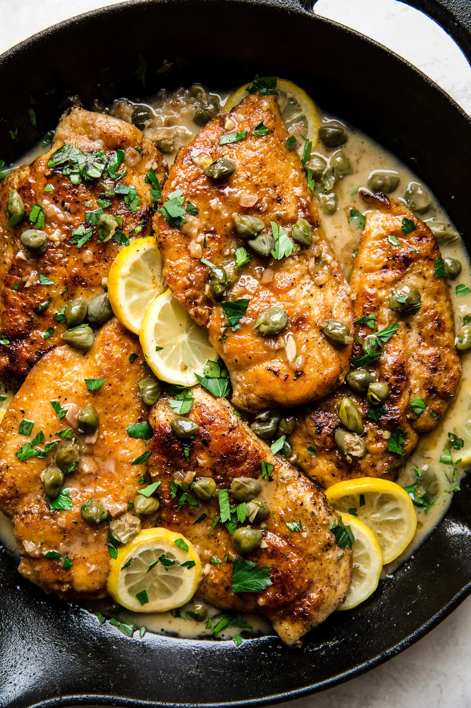

Chicken Piccata

Description
Chicken Piccata is a classic Italian-American dish consisting of pan-fried chicken cutlets coated in a tangy lemon-butter-caper sauce.
The chicken is typically dredged in flour, browned, and then finished in a sauce made with lemon juice, butter, and capers. It's known
for its bright, citrusy flavor and is often served with pasta or rice to soak up the delicious sauce.
Ingredients
- Boneless, skinless chicken breasts
- Salt & pepper
- Flour for dredging
- Butter
- Olive oil
- Chicken stock
- Shallots
- Garlic
- Lemons
- Capers
Steps
- Slice or pound your chicken breasts to a thickness of 1/3 of a inch or so.
- Dredge your chicken in a thin coating of seasoned flour and pat off any excess.
- Then fry your chicken breast in some butter and olive oil until golden brown.
- Remove the chicken from the pan but keep the oil/butter for your sauce!
- Toss in your diced shallots and garlic til fragrant.
- Add chicken stock to scrape up any remaining fond in the pan.
- Add butter, capers, and lemon juice to complete the sauce.
- Season with salt and pepper to taste.
Home